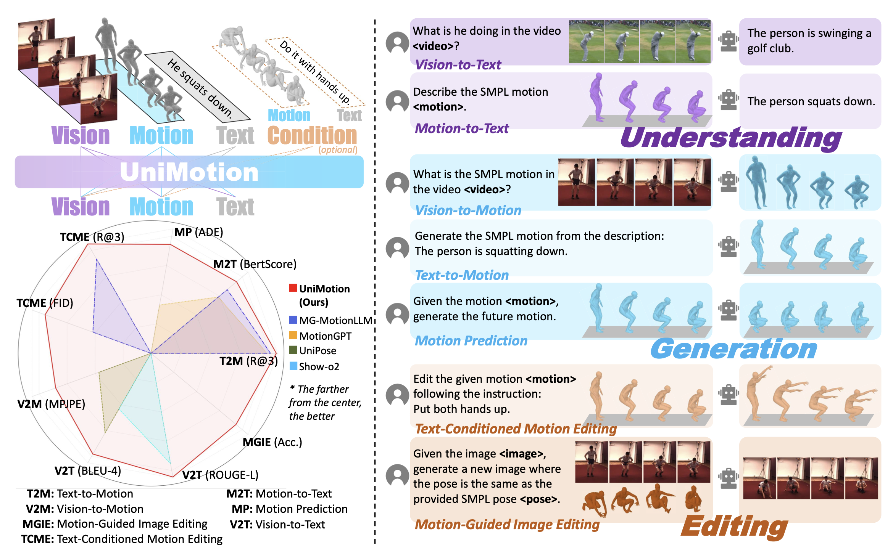
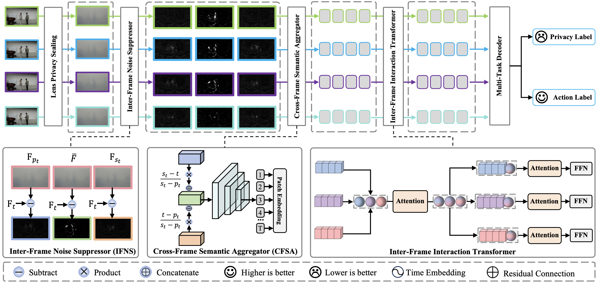
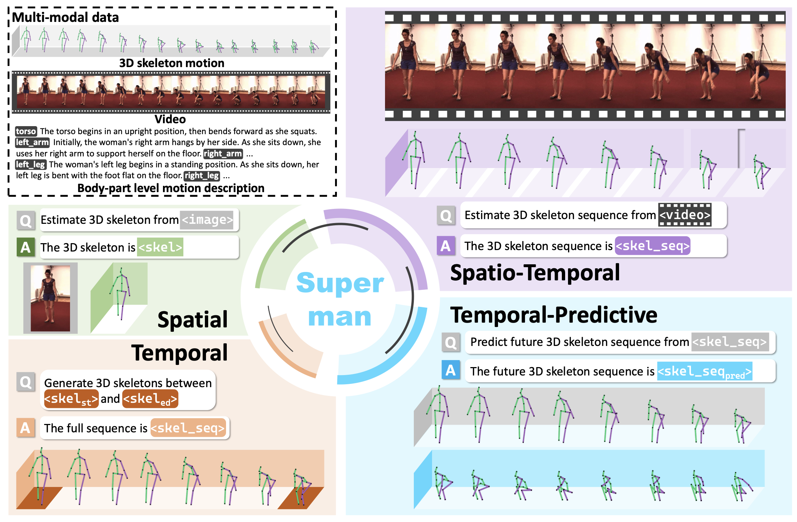
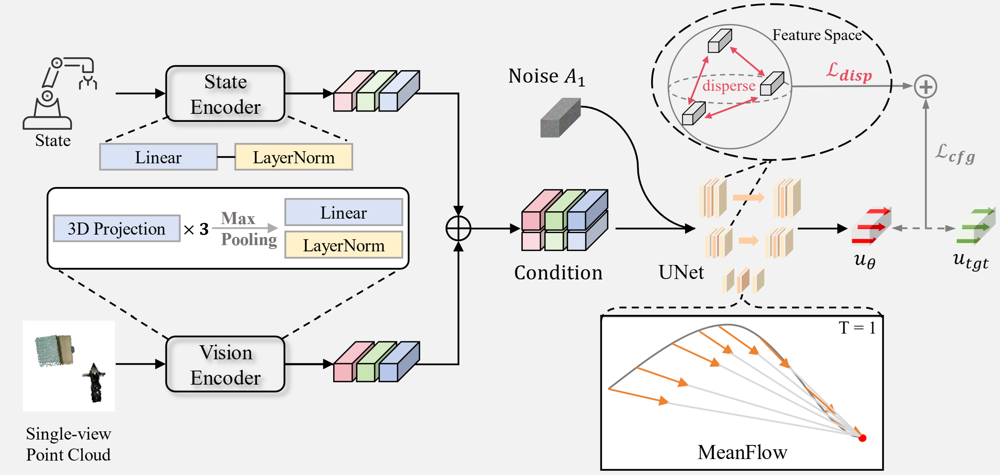
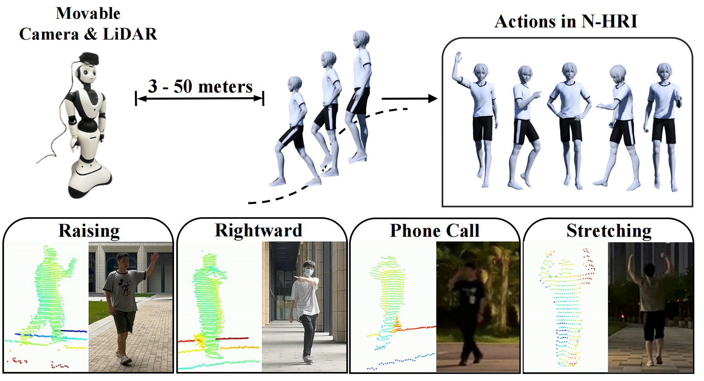
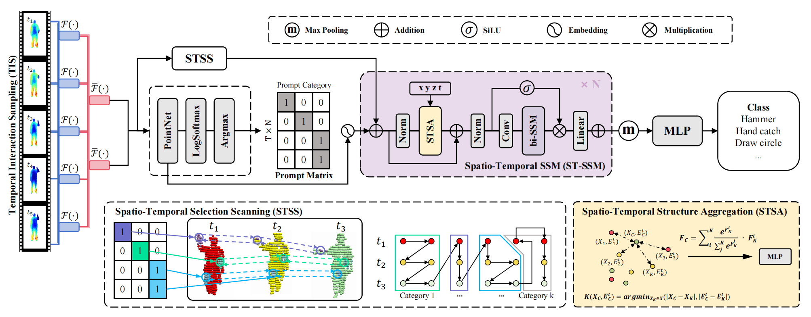
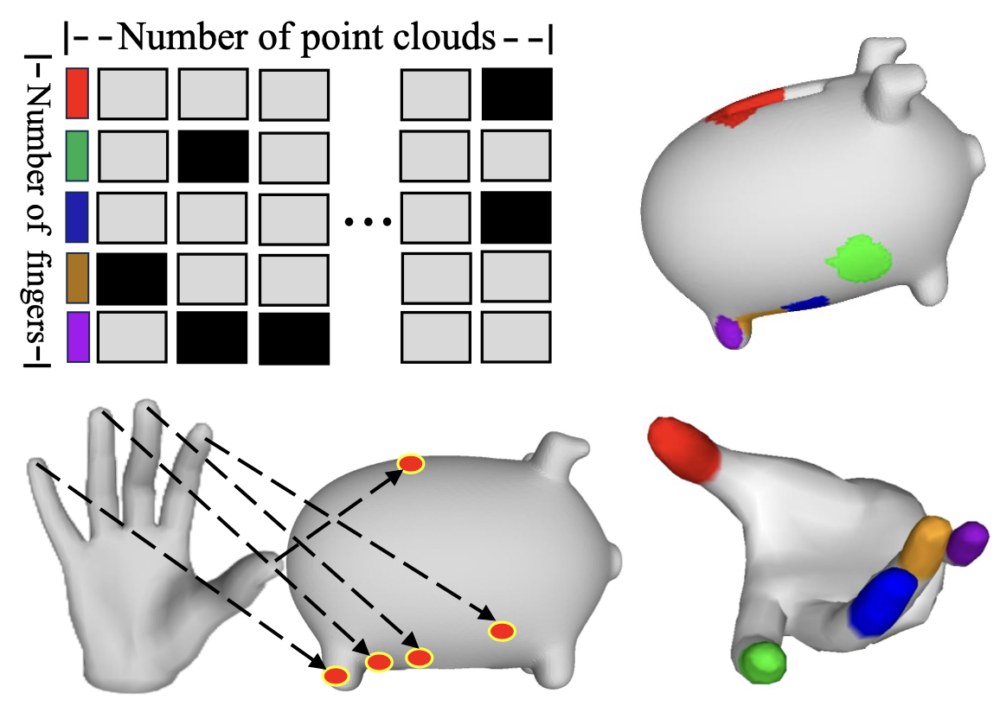

UniMotion: A Unified Framework for Motion-Text-Vision Understanding and Generation
European Conference on Computer Vision (ECCV)
Peking University · CV · Deep Learning
I am a second-year M.S. student in Computer Science and Technology at Peking University, advised by Prof. Mengyuan Liu and Prof. Hong Liu. My research focuses on Multimodal Large Language Models, Human Motion Perception and Generation, and Embodied AI.
Before that, I received my B.S. degree in Computer Science and Technology from Ocean University of China in 2024, ranked top 1 out of 289 students.
Recent Updates
Selected Work
* indicates equal contribution, # indicates corresponding author.

European Conference on Computer Vision (ECCV)

International Conference on Machine Learning

IEEE Transactions on Image Processing (TIP)

IEEE/CVF Conference on Computer Vision and Pattern Recognition

AAAI Conference on Artificial Intelligence

IEEE International Conference on Computer Vision

IEEE International Conference on Computer Vision

ACM International Conference on Multimedia
Academic Service
Competitions
Recognition